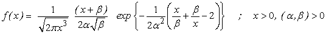

![[bs_ex0]](bs_ex0.bmp) Birnbaum-Saunders Model
Birnbaum-Saunders Model

model
{
for( i in 1 : N )
{
x[i] ~ dbs(alpha, beta)
}
# Prior distributions of the model parameters
alpha ~ dunif(0.01, 5.0)
beta~ dunif(0.01, 300.0)
}
The following data 'psi31' are taken from Birnbaum and Saunders(1969).
Birnbaum, Z. W. and Saunders, S. C. (1969). Estimation for a family of life distributions with applications to fatigue. J. Appl. Probab. 6(2), 328-347.
Leiva, V., Hernández, H., and Riquelme, M. (2006). A New Package for the Birnbaum-Saunders Distribution. Rnews , 6/4, 35-40.
The MLE's are obtained using 'bs' package in R alpha.mle = 0.1703847 beta.mle = 131.8188
.
Data ( click to open )
Inits for chain 1 Inits for chain 2 ( click to open )
Results